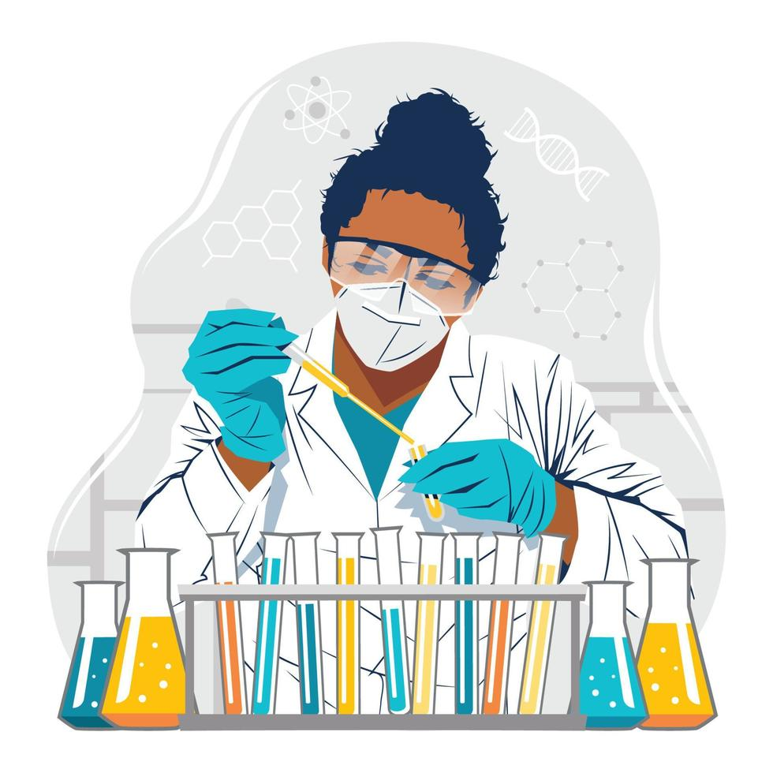
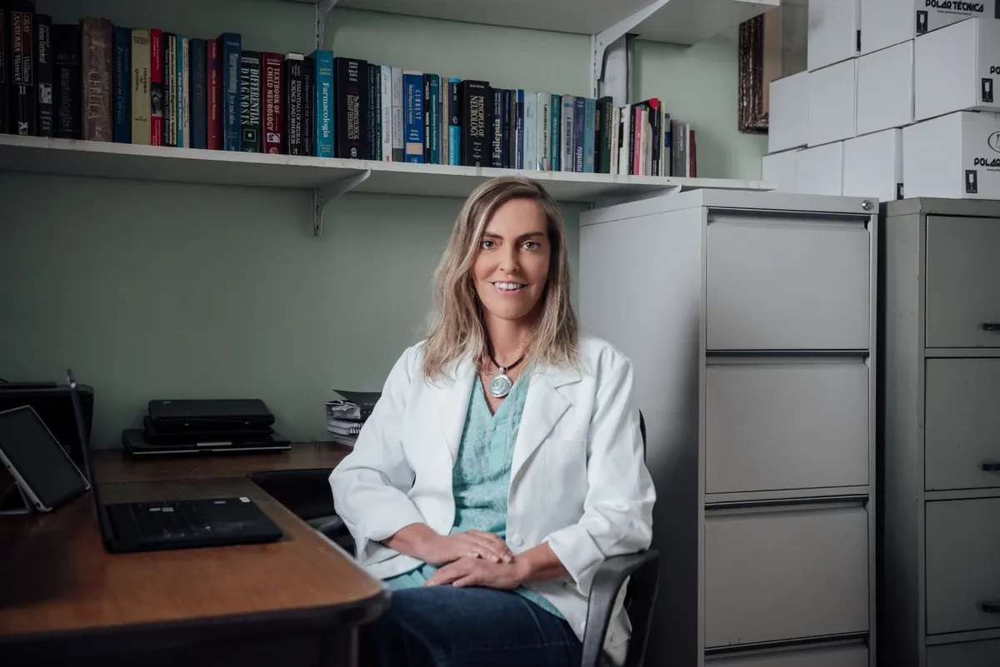
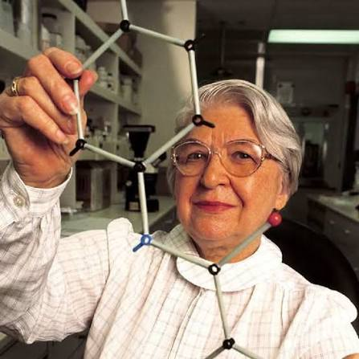

Portas fechadas
Por muito tempo, universidades e laboratórios não aceitavam mulheres. Muitas estudaram em casa ou com ajuda de familiares.
Conheça mulheres que fizeram história!
As mulheres tiveram um papel muito importante no desenvolvimento da ciência, realizando descobertas e criando novas tecnologias.
Neste trabalho, vamos conhecer cientistas brasileiras e internacionais que contribuíram para diferentes áreas do conhecimento.

Ao longo do tempo, muitas mulheres enfrentaram dificuldades para estudar e trabalhar na ciência. Mesmo assim, elas conseguiram realizar grandes descobertas.
Por muito tempo, universidades e laboratórios não aceitavam mulheres. Muitas estudaram em casa ou com ajuda de familiares.
Várias cientistas tiveram seus trabalhos creditados a colegas homens ou foram esquecidas pela história.
Salários menores, poucos cargos de liderança e preconceito fizeram a carreira científica ser mais difícil.
Com muita persistência, as mulheres conquistaram espaço e hoje inspiram novas gerações de meninas.
As cientistas fizeram pesquisas importantes na medicina, na química, na física e em outras áreas, ajudando a transformar a sociedade.
Marie Curie recebeu o Nobel de Física pelos estudos sobre radioatividade e, em 1911, o Nobel de Química.
A famosa “Fotografia 51”, feita por Rosalind Franklin, foi fundamental para entender a forma do DNA.
Stephanie Kwolek criou a fibra mais resistente que o aço, usada em coletes de proteção.
Tatiana Sampaio pesquisa uma substância com potencial para ajudar a tratar lesões na medula espinhal.
Escolha uma cientista para conhecer sua história, suas descobertas e sua importância para a ciência.

Pesquisadora da área de biologia, estuda como o corpo pode se regenerar após lesões no sistema nervoso.

Química polonesa-americana (1923–2014) que trabalhou na empresa DuPont, nos Estados Unidos.
Pesquisadora e professora da Universidade Federal do Rio de Janeiro (UFRJ), na área de biologia, dedicada a estudar como o corpo pode se recuperar de lesões no sistema nervoso.
Tatiana Sampaio é uma cientista brasileira que dedica sua carreira a entender como as células e as proteínas do nosso corpo ajudam na regeneração dos tecidos. Seu trabalho é um exemplo de ciência de qualidade feita em universidades públicas do Brasil.
A laminina é uma proteína que existe naturalmente no corpo e ajuda as células nervosas a se organizarem e crescerem. A polilaminina é uma versão dessa proteína preparada em laboratório, que está sendo estudada para ajudar no tratamento de lesões na medula espinhal, que podem causar perda de movimentos.
Lesões na medula afetam a vida de muitas pessoas, e hoje há poucas opções de tratamento. A pesquisa ainda passa por etapas de estudo e testes para comprovar sua segurança e eficácia, mas traz esperança e mostra o potencial da ciência brasileira e das mulheres cientistas.
Química polonesa-americana (1923–2014) que trabalhou por décadas na empresa DuPont, nos Estados Unidos, e criou uma das fibras mais resistentes já inventadas.
Stephanie Kwolek nasceu na Pensilvânia, filha de imigrantes poloneses. Queria estudar medicina, mas acabou seguindo a química e entrou na DuPont em 1946, onde pesquisou novos materiais por mais de 40 anos.
Em 1965, ao trabalhar com polímeros, Stephanie percebeu que uma mistura diferente do normal, mais líquida e turva, poderia render fibras fortíssimas. Mesmo com dúvidas de colegas, ela insistiu nos testes e descobriu o Kevlar, fibra leve e, por peso, muito mais resistente que o aço.
O Kevlar é usado em coletes de proteção, capacetes, pneus, cabos, equipamentos esportivos e peças de aviões e barcos. Ele já ajudou a salvar muitas vidas e mostra como a curiosidade e a persistência de uma cientista podem mudar o mundo.
As descobertas científicas ajudam a melhorar a vida das pessoas e mostram como a participação das mulheres é importante para o avanço da ciência.
Curiosidades sobre mulheres cientistas.
Existem cientistas que descobriram novos materiais.
Algumas pesquisas ajudam no tratamento de doenças.
Mulheres cientistas contribuíram para diversas invenções.
Marie Curie foi a primeira pessoa a ganhar Prêmios Nobel em duas áreas diferentes: Física e Química.
Ada Lovelace escreveu, no século 19, o que é considerado o primeiro algoritmo para uma máquina.
O Kevlar é usado em coletes, capacetes e até em cabos e pneus.
Teste o que você aprendeu sobre Tatiana Sampaio e Stephanie Kwolek.
Conhece outra mulher importante para a ciência? Indique!